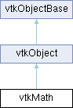

|
Etrek
|
|
Etrek
|
performs common math operations More...
#include <vtkMath.h>

Public Types | |
| enum class | ConvolutionMode { FULL , SAME , VALID } |
Public Member Functions | |
| vtkTypeMacro (vtkMath, vtkObject) | |
| void | PrintSelf (ostream &os, vtkIndent indent) override |
| template<class T1, class T2> | |
| void | TensorFromSymmetricTensor (const T1 symmTensor[9], T2 tensor[9]) |
| Public Member Functions inherited from vtkObject | |
| vtkBaseTypeMacro (vtkObject, vtkObjectBase) | |
| virtual void | DebugOn () |
| virtual void | DebugOff () |
| bool | GetDebug () |
| void | SetDebug (bool debugFlag) |
| virtual void | Modified () |
| virtual vtkMTimeType | GetMTime () |
| void | PrintSelf (ostream &os, vtkIndent indent) override |
| void | RemoveObserver (unsigned long tag) |
| void | RemoveObservers (unsigned long event) |
| void | RemoveObservers (const char *event) |
| void | RemoveAllObservers () |
| vtkTypeBool | HasObserver (unsigned long event) |
| vtkTypeBool | HasObserver (const char *event) |
| vtkTypeBool | InvokeEvent (unsigned long event) |
| vtkTypeBool | InvokeEvent (const char *event) |
| std::string | GetObjectDescription () const override |
| unsigned long | AddObserver (unsigned long event, vtkCommand *, float priority=0.0f) |
| unsigned long | AddObserver (const char *event, vtkCommand *, float priority=0.0f) |
| vtkCommand * | GetCommand (unsigned long tag) |
| void | RemoveObserver (vtkCommand *) |
| void | RemoveObservers (unsigned long event, vtkCommand *) |
| void | RemoveObservers (const char *event, vtkCommand *) |
| vtkTypeBool | HasObserver (unsigned long event, vtkCommand *) |
| vtkTypeBool | HasObserver (const char *event, vtkCommand *) |
| template<class U, class T> | |
| unsigned long | AddObserver (unsigned long event, U observer, void(T::*callback)(), float priority=0.0f) |
| template<class U, class T> | |
| unsigned long | AddObserver (unsigned long event, U observer, void(T::*callback)(vtkObject *, unsigned long, void *), float priority=0.0f) |
| template<class U, class T> | |
| unsigned long | AddObserver (unsigned long event, U observer, bool(T::*callback)(vtkObject *, unsigned long, void *), float priority=0.0f) |
| vtkTypeBool | InvokeEvent (unsigned long event, void *callData) |
| vtkTypeBool | InvokeEvent (const char *event, void *callData) |
| virtual void | SetObjectName (const std::string &objectName) |
| virtual std::string | GetObjectName () const |
| Public Member Functions inherited from vtkObjectBase | |
| const char * | GetClassName () const |
| virtual vtkTypeBool | IsA (const char *name) |
| virtual vtkIdType | GetNumberOfGenerationsFromBase (const char *name) |
| virtual void | Delete () |
| virtual void | FastDelete () |
| void | InitializeObjectBase () |
| void | Print (ostream &os) |
| void | Register (vtkObjectBase *o) |
| virtual void | UnRegister (vtkObjectBase *o) |
| int | GetReferenceCount () |
| void | SetReferenceCount (int) |
| bool | GetIsInMemkind () const |
| virtual void | PrintHeader (ostream &os, vtkIndent indent) |
| virtual void | PrintTrailer (ostream &os, vtkIndent indent) |
| virtual bool | UsesGarbageCollector () const |
Static Public Member Functions | |
| static vtkMath * | New () |
| static constexpr int | DYNAMIC_VECTOR_SIZE () |
| static constexpr double | Pi () |
| static int | Round (float f) |
| static int | Round (double f) |
| template<typename OutT> | |
| static void | RoundDoubleToIntegralIfNecessary (double val, OutT *ret) |
| static int | Floor (double x) |
| static int | Ceil (double x) |
| static int | CeilLog2 (vtkTypeUInt64 x) |
| template<class T> | |
| static T | Min (const T &a, const T &b) |
| template<class T> | |
| static T | Max (const T &a, const T &b) |
| static bool | IsPowerOfTwo (vtkTypeUInt64 x) |
| static int | NearestPowerOfTwo (int x) |
| static vtkTypeInt64 | Factorial (int N) |
| static vtkTypeInt64 | Binomial (int m, int n) |
| static int * | BeginCombination (int m, int n) |
| static int | NextCombination (int m, int n, int *combination) |
| static void | FreeCombination (int *combination) |
| static void | RandomSeed (int s) |
| static int | GetSeed () |
| static double | Random () |
| static double | Random (double min, double max) |
| static double | Gaussian () |
| static double | Gaussian (double mean, double std) |
| template<class VectorT1, class VectorT2> | |
| static void | Assign (const VectorT1 &a, VectorT2 &&b) |
| static void | Assign (const double a[3], double b[3]) |
| static void | Add (const float a[3], const float b[3], float c[3]) |
| static void | Add (const double a[3], const double b[3], double c[3]) |
| template<class VectorT1, class VectorT2, class VectorT3> | |
| static void | Add (VectorT1 &&a, VectorT2 &&b, VectorT3 &c) |
| static void | Subtract (const float a[3], const float b[3], float c[3]) |
| static void | Subtract (const double a[3], const double b[3], double c[3]) |
| template<class VectorT1, class VectorT2, class VectorT3> | |
| static void | Subtract (const VectorT1 &a, const VectorT2 &b, VectorT3 &&c) |
| static void | MultiplyScalar (float a[3], float s) |
| static void | MultiplyScalar2D (float a[2], float s) |
| static void | MultiplyScalar (double a[3], double s) |
| static void | MultiplyScalar2D (double a[2], double s) |
| static float | Dot (const float a[3], const float b[3]) |
| static double | Dot (const double a[3], const double b[3]) |
| template<typename ReturnTypeT = double, typename TupleRangeT1, typename TupleRangeT2, typename EnableT = typename std::conditional<!std::is_pointer<TupleRangeT1>::value && !std::is_array<TupleRangeT1>::value, TupleRangeT1, TupleRangeT2>::type::value_type> | |
| static ReturnTypeT | Dot (const TupleRangeT1 &a, const TupleRangeT2 &b) |
| static void | Outer (const float a[3], const float b[3], float c[3][3]) |
| static void | Outer (const double a[3], const double b[3], double c[3][3]) |
| template<class VectorT1, class VectorT2, class VectorT3> | |
| static void | Cross (VectorT1 &&a, VectorT2 &&b, VectorT3 &c) |
| static void | Cross (const float a[3], const float b[3], float c[3]) |
| static void | Cross (const double a[3], const double b[3], double c[3]) |
| static float | Norm (const float v[3]) |
| static double | Norm (const double v[3]) |
| template<typename ReturnTypeT = double, typename TupleRangeT> | |
| static ReturnTypeT | SquaredNorm (const TupleRangeT &v) |
| static float | Normalize (float v[3]) |
| static double | Normalize (double v[3]) |
| template<typename ReturnTypeT = double, typename TupleRangeT1, typename TupleRangeT2, typename EnableT = typename std::conditional<!std::is_pointer<TupleRangeT1>::value && !std::is_array<TupleRangeT1>::value, TupleRangeT1, TupleRangeT2>::type::value_type> | |
| static ReturnTypeT | Distance2BetweenPoints (const TupleRangeT1 &p1, const TupleRangeT2 &p2) |
| static float | Distance2BetweenPoints (const float p1[3], const float p2[3]) |
| static double | Distance2BetweenPoints (const double p1[3], const double p2[3]) |
| static double | AngleBetweenVectors (const double v1[3], const double v2[3]) |
| static double | SignedAngleBetweenVectors (const double v1[3], const double v2[3], const double vn[3]) |
| static double | GaussianAmplitude (double variance, double distanceFromMean) |
| static double | GaussianAmplitude (double mean, double variance, double position) |
| static double | GaussianWeight (double variance, double distanceFromMean) |
| static double | GaussianWeight (double mean, double variance, double position) |
| static float | Dot2D (const float x[2], const float y[2]) |
| static double | Dot2D (const double x[2], const double y[2]) |
| static void | Outer2D (const float x[2], const float y[2], float A[2][2]) |
| static void | Outer2D (const double x[2], const double y[2], double A[2][2]) |
| static float | Norm2D (const float x[2]) |
| static double | Norm2D (const double x[2]) |
| static float | Normalize2D (float v[2]) |
| static double | Normalize2D (double v[2]) |
| static float | Determinant2x2 (const float c1[2], const float c2[2]) |
| template<int RowsT, int MidDimT, int ColsT, class LayoutT1 = vtkMatrixUtilities::Layout::Identity, class LayoutT2 = vtkMatrixUtilities::Layout::Identity, class MatrixT1, class MatrixT2, class MatrixT3> | |
| static void | MultiplyMatrix (MatrixT1 &&M1, MatrixT2 &&M2, MatrixT3 &&M3) |
| template<int RowsT, int ColsT, class LayoutT = vtkMatrixUtilities::Layout::Identity, class MatrixT, class VectorT1, class VectorT2> | |
| static void | MultiplyMatrixWithVector (MatrixT &&M, VectorT1 &&X, VectorT2 &&Y) |
| template<class ScalarT, int SizeT, class VectorT1, class VectorT2, class = typename std::enable_if<SizeT != DYNAMIC_VECTOR_SIZE()>::type> | |
| static ScalarT | Dot (VectorT1 &&x, VectorT2 &&y) |
| template<class ScalarT, int SizeT, class VectorT1, class VectorT2, class = typename std::enable_if<SizeT == DYNAMIC_VECTOR_SIZE()>::type, class = EnableIfVectorImplementsSize<VectorT1>> | |
| static ScalarT | Dot (VectorT1 &&x, VectorT2 &&y) |
| template<int SizeT, class VectorT> | |
| static vtkMatrixUtilities::ScalarTypeExtractor< VectorT >::value_type | SquaredNorm (VectorT &&x) |
| template<int SizeT, class LayoutT = vtkMatrixUtilities::Layout::Identity, class MatrixT> | |
| static vtkMatrixUtilities::ScalarTypeExtractor< MatrixT >::value_type | Determinant (MatrixT &&M) |
| template<int SizeT, class LayoutT = vtkMatrixUtilities::Layout::Identity, class MatrixT1, class MatrixT2> | |
| static void | InvertMatrix (MatrixT1 &&M1, MatrixT2 &&M2) |
| template<int RowsT, int ColsT, class LayoutT = vtkMatrixUtilities::Layout::Identity, class MatrixT, class VectorT1, class VectorT2> | |
| static void | LinearSolve (MatrixT &&M, VectorT1 &&x, VectorT2 &&y) |
| template<class ScalarT, int SizeT, class LayoutT = vtkMatrixUtilities::Layout::Identity, class VectorT1, class MatrixT, class VectorT2, class = typename std::enable_if<SizeT != DYNAMIC_VECTOR_SIZE()>::type> | |
| static ScalarT | Dot (VectorT1 &&x, MatrixT &&M, VectorT2 &&y) |
| static void | MultiplyMatrix (const double *const *A, const double *const *B, unsigned int rowA, unsigned int colA, unsigned int rowB, unsigned int colB, double **C) |
| static float | Determinant3x3 (const float c1[3], const float c2[3], const float c3[3]) |
| static double | Determinant3x3 (const double c1[3], const double c2[3], const double c3[3]) |
| static double | Determinant3x3 (double a1, double a2, double a3, double b1, double b2, double b3, double c1, double c2, double c3) |
| static vtkTypeBool | SolveLinearSystemGEPP2x2 (double a00, double a01, double a10, double a11, double b0, double b1, double &x0, double &x1) |
| static vtkTypeBool | SolveLinearSystem (double **A, double *x, int size) |
| static vtkTypeBool | InvertMatrix (double **A, double **AI, int size) |
| static vtkTypeBool | InvertMatrix (double **A, double **AI, int size, int *tmp1Size, double *tmp2Size) |
| static vtkTypeBool | LUFactorLinearSystem (double **A, int *index, int size) |
| static vtkTypeBool | LUFactorLinearSystem (double **A, int *index, int size, double *tmpSize) |
| static void | LUSolveLinearSystem (double **A, int *index, double *x, int size) |
| static double | EstimateMatrixCondition (const double *const *A, int size) |
| static vtkTypeBool | SolveHomogeneousLeastSquares (int numberOfSamples, double **xt, int xOrder, double **mt) |
| static vtkTypeBool | SolveLeastSquares (int numberOfSamples, double **xt, int xOrder, double **yt, int yOrder, double **mt, int checkHomogeneous=1) |
| template<class T> | |
| static T | ClampValue (const T &value, const T &min, const T &max) |
| static double | ClampAndNormalizeValue (double value, const double range[2]) |
| template<class T1, class T2> | |
| static void | TensorFromSymmetricTensor (const T1 symmTensor[6], T2 tensor[9]) |
| template<class T> | |
| static void | TensorFromSymmetricTensor (T tensor[9]) |
| static int | GetScalarTypeFittingRange (double range_min, double range_max, double scale=1.0, double shift=0.0) |
| static vtkTypeBool | GetAdjustedScalarRange (vtkDataArray *array, int comp, double range[2]) |
| static vtkTypeBool | ExtentIsWithinOtherExtent (const int extent1[6], const int extent2[6]) |
| static vtkTypeBool | BoundsIsWithinOtherBounds (const double bounds1[6], const double bounds2[6], const double delta[3]) |
| static vtkTypeBool | PointIsWithinBounds (const double point[3], const double bounds[6], const double delta[3]) |
| static int | PlaneIntersectsAABB (const double bounds[6], const double normal[3], const double point[3]) |
| static double | Solve3PointCircle (const double p1[3], const double p2[3], const double p3[3], double center[3]) |
| static double | Inf () |
| static double | NegInf () |
| static double | Nan () |
| static vtkTypeBool | IsInf (double x) |
| static vtkTypeBool | IsNan (double x) |
| static bool | IsFinite (double x) |
| static int | QuadraticRoot (double a, double b, double c, double min, double max, double *u) |
| static vtkIdType | ComputeGCD (vtkIdType m, vtkIdType n) |
| template<class Iter1, class Iter2, class Iter3> | |
| static void | Convolve1D (Iter1 beginSample, Iter1 endSample, Iter2 beginKernel, Iter2 endKernel, Iter3 beginOut, Iter3 endOut, ConvolutionMode mode=ConvolutionMode::FULL) |
| static void | GetPointAlongLine (double result[3], double p1[3], double p2[3], const double offset) |
| static float | RadiansFromDegrees (float degrees) |
| static double | RadiansFromDegrees (double degrees) |
| static float | DegreesFromRadians (float radians) |
| static double | DegreesFromRadians (double radians) |
| static float | Norm (const float *x, int n) |
| static double | Norm (const double *x, int n) |
| static void | Perpendiculars (const double v1[3], double v2[3], double v3[3], double theta) |
| static void | Perpendiculars (const float v1[3], float v2[3], float v3[3], double theta) |
| static bool | ProjectVector (const float a[3], const float b[3], float projection[3]) |
| static bool | ProjectVector (const double a[3], const double b[3], double projection[3]) |
| static bool | ProjectVector2D (const float a[2], const float b[2], float projection[2]) |
| static bool | ProjectVector2D (const double a[2], const double b[2], double projection[2]) |
| static double | Determinant2x2 (double a, double b, double c, double d) |
| static double | Determinant2x2 (const double c1[2], const double c2[2]) |
| static void | LUFactor3x3 (float A[3][3], int index[3]) |
| static void | LUFactor3x3 (double A[3][3], int index[3]) |
| static void | LUSolve3x3 (const float A[3][3], const int index[3], float x[3]) |
| static void | LUSolve3x3 (const double A[3][3], const int index[3], double x[3]) |
| static void | LinearSolve3x3 (const float A[3][3], const float x[3], float y[3]) |
| static void | LinearSolve3x3 (const double A[3][3], const double x[3], double y[3]) |
| static void | Multiply3x3 (const float A[3][3], const float v[3], float u[3]) |
| static void | Multiply3x3 (const double A[3][3], const double v[3], double u[3]) |
| static void | Multiply3x3 (const float A[3][3], const float B[3][3], float C[3][3]) |
| static void | Multiply3x3 (const double A[3][3], const double B[3][3], double C[3][3]) |
| static void | Transpose3x3 (const float A[3][3], float AT[3][3]) |
| static void | Transpose3x3 (const double A[3][3], double AT[3][3]) |
| static void | Invert3x3 (const float A[3][3], float AI[3][3]) |
| static void | Invert3x3 (const double A[3][3], double AI[3][3]) |
| static void | Identity3x3 (float A[3][3]) |
| static void | Identity3x3 (double A[3][3]) |
| static double | Determinant3x3 (const float A[3][3]) |
| static double | Determinant3x3 (const double A[3][3]) |
| static void | QuaternionToMatrix3x3 (const float quat[4], float A[3][3]) |
| static void | QuaternionToMatrix3x3 (const double quat[4], double A[3][3]) |
| template<class QuaternionT, class MatrixT, class EnableT = typename std::enable_if<!vtkMatrixUtilities::MatrixIs2DArray<MatrixT>()>::type> | |
| static void | QuaternionToMatrix3x3 (QuaternionT &&q, MatrixT &&A) |
| static void | Matrix3x3ToQuaternion (const float A[3][3], float quat[4]) |
| static void | Matrix3x3ToQuaternion (const double A[3][3], double quat[4]) |
| template<class MatrixT, class QuaternionT, class EnableT = typename std::enable_if<!vtkMatrixUtilities::MatrixIs2DArray<MatrixT>()>::type> | |
| static void | Matrix3x3ToQuaternion (MatrixT &&A, QuaternionT &&q) |
| static void | MultiplyQuaternion (const float q1[4], const float q2[4], float q[4]) |
| static void | MultiplyQuaternion (const double q1[4], const double q2[4], double q[4]) |
| static void | RotateVectorByNormalizedQuaternion (const float v[3], const float q[4], float r[3]) |
| static void | RotateVectorByNormalizedQuaternion (const double v[3], const double q[4], double r[3]) |
| static void | RotateVectorByWXYZ (const float v[3], const float q[4], float r[3]) |
| static void | RotateVectorByWXYZ (const double v[3], const double q[4], double r[3]) |
| static void | Orthogonalize3x3 (const float A[3][3], float B[3][3]) |
| static void | Orthogonalize3x3 (const double A[3][3], double B[3][3]) |
| static void | Diagonalize3x3 (const float A[3][3], float w[3], float V[3][3]) |
| static void | Diagonalize3x3 (const double A[3][3], double w[3], double V[3][3]) |
| static void | SingularValueDecomposition3x3 (const float A[3][3], float U[3][3], float w[3], float VT[3][3]) |
| static void | SingularValueDecomposition3x3 (const double A[3][3], double U[3][3], double w[3], double VT[3][3]) |
| static vtkTypeBool | Jacobi (float **a, float *w, float **v) |
| static vtkTypeBool | Jacobi (double **a, double *w, double **v) |
| static vtkTypeBool | JacobiN (float **a, int n, float *w, float **v) |
| static vtkTypeBool | JacobiN (double **a, int n, double *w, double **v) |
| static void | RGBToHSV (const float rgb[3], float hsv[3]) |
| static void | RGBToHSV (float r, float g, float b, float *h, float *s, float *v) |
| static void | RGBToHSV (const double rgb[3], double hsv[3]) |
| static void | RGBToHSV (double r, double g, double b, double *h, double *s, double *v) |
| static void | HSVToRGB (const float hsv[3], float rgb[3]) |
| static void | HSVToRGB (float h, float s, float v, float *r, float *g, float *b) |
| static void | HSVToRGB (const double hsv[3], double rgb[3]) |
| static void | HSVToRGB (double h, double s, double v, double *r, double *g, double *b) |
| static void | ProLabToXYZ (const double prolab[3], double xyz[3]) |
| static void | ProLabToXYZ (double L, double a, double b, double *x, double *y, double *z) |
| static void | XYZToProLab (const double xyz[3], double prolab[3]) |
| static void | XYZToProLab (double x, double y, double z, double *L, double *a, double *b) |
| static void | LabToXYZ (const double lab[3], double xyz[3]) |
| static void | LabToXYZ (double L, double a, double b, double *x, double *y, double *z) |
| static void | XYZToLab (const double xyz[3], double lab[3]) |
| static void | XYZToLab (double x, double y, double z, double *L, double *a, double *b) |
| static void | XYZToRGB (const double xyz[3], double rgb[3]) |
| static void | XYZToRGB (double x, double y, double z, double *r, double *g, double *b) |
| static void | RGBToXYZ (const double rgb[3], double xyz[3]) |
| static void | RGBToXYZ (double r, double g, double b, double *x, double *y, double *z) |
| static void | RGBToLab (const double rgb[3], double lab[3]) |
| static void | RGBToLab (double red, double green, double blue, double *L, double *a, double *b) |
| static void | ProLabToRGB (const double prolab[3], double rgb[3]) |
| static void | ProLabToRGB (double L, double a, double b, double *red, double *green, double *blue) |
| static void | RGBToProLab (const double rgb[3], double prolab[3]) |
| static void | RGBToProLab (double red, double green, double blue, double *L, double *a, double *b) |
| static void | LabToRGB (const double lab[3], double rgb[3]) |
| static void | LabToRGB (double L, double a, double b, double *red, double *green, double *blue) |
| static void | UninitializeBounds (double bounds[6]) |
| static vtkTypeBool | AreBoundsInitialized (const double bounds[6]) |
| static void | ClampValue (double *value, const double range[2]) |
| static void | ClampValue (double value, const double range[2], double *clamped_value) |
| static void | ClampValues (double *values, int nb_values, const double range[2]) |
| static void | ClampValues (const double *values, int nb_values, const double range[2], double *clamped_values) |
| Static Public Member Functions inherited from vtkObject | |
| static vtkObject * | New () |
| static void | BreakOnError () |
| static void | SetGlobalWarningDisplay (vtkTypeBool val) |
| static void | GlobalWarningDisplayOn () |
| static void | GlobalWarningDisplayOff () |
| static vtkTypeBool | GetGlobalWarningDisplay () |
| Static Public Member Functions inherited from vtkObjectBase | |
| static vtkTypeBool | IsTypeOf (const char *name) |
| static vtkIdType | GetNumberOfGenerationsFromBaseType (const char *name) |
| static vtkObjectBase * | New () |
| static void | SetMemkindDirectory (const char *directoryname) |
| static bool | GetUsingMemkind () |
Static Protected Attributes | |
| static vtkSmartPointer< vtkMathInternal > | Internal |
Additional Inherited Members | |
| Protected Member Functions inherited from vtkObject | |
| void | RegisterInternal (vtkObjectBase *, vtkTypeBool check) override |
| void | UnRegisterInternal (vtkObjectBase *, vtkTypeBool check) override |
| void | InternalGrabFocus (vtkCommand *mouseEvents, vtkCommand *keypressEvents=nullptr) |
| void | InternalReleaseFocus () |
| Protected Member Functions inherited from vtkObjectBase | |
| virtual void | ReportReferences (vtkGarbageCollector *) |
| vtkObjectBase (const vtkObjectBase &) | |
| void | operator= (const vtkObjectBase &) |
| Static Protected Member Functions inherited from vtkObjectBase | |
| static vtkMallocingFunction | GetCurrentMallocFunction () |
| static vtkReallocingFunction | GetCurrentReallocFunction () |
| static vtkFreeingFunction | GetCurrentFreeFunction () |
| static vtkFreeingFunction | GetAlternateFreeFunction () |
| Protected Attributes inherited from vtkObject | |
| bool | Debug |
| vtkTimeStamp | MTime |
| vtkSubjectHelper * | SubjectHelper |
| std::string | ObjectName |
| Protected Attributes inherited from vtkObjectBase | |
| std::atomic< int32_t > | ReferenceCount |
| vtkWeakPointerBase ** | WeakPointers |
performs common math operations
vtkMath provides methods to perform common math operations. These include providing constants such as Pi; conversion from degrees to radians; vector operations such as dot and cross products and vector norm; matrix determinant for 2x2 and 3x3 matrices; univariate polynomial solvers; and for random number generation (for backward compatibility only).
|
strong |
Support the convolution operations.
|
inlinestatic |
Addition of two 3-vectors (double version). Result is stored in c according to c = a + b.
|
inlinestatic |
Addition of two 3-vectors (float version). Result is stored in c according to c = a + b.
|
inlinestatic |
Addition of two 3-vectors (double version). Result is stored in c according to c = a + b.
Each parameter needs to implement operator[]
|
static |
Compute angle in radians between two vectors.
|
inlinestatic |
Are the bounds initialized?
|
inlinestatic |
Assign values to a 3-vector (double version). Result is stored in b according to b = a.
|
inlinestatic |
Assign values to a 3-vector (templated version). Result is stored in b according to b = a. Each parameter must implement operator[].
|
static |
Start iterating over "m choose n" objects. This function returns an array of n integers, each from 0 to m-1. These integers represent the n items chosen from the set [0,m[.
You are responsible for calling vtkMath::FreeCombination() once the iterator is no longer needed.
Warning: this gets large very quickly, especially when n nears m/2! (Hint: think of Pascal's triangle.)
|
static |
The number of combinations of n objects from a pool of m objects (m>n). This is commonly known as "m choose n" and sometimes denoted 

|
static |
Return true if first 3D bounds is within the second 3D bounds Bounds is x-min, x-max, y-min, y-max, z-min, z-max Delta is the error margin along each axis (usually a small number)
|
inlinestatic |
Rounds a double to the nearest integer not less than itself. This is faster than ceil() but provides undefined output on overflow.
|
static |
Gives the exponent of the lowest power of two not less than x. Or in mathspeak, return the smallest "i" for which 2^i >= x. If x is zero, then the return value will be zero.
|
inlinestatic |
Clamp a value against a range and then normalize it between 0 and 1. If range[0]==range[1], the result is 0.
|
inlinestatic |
Clamp some value against a range, return the result. min must be less than or equal to max. Semantics the same as std::clamp.
|
inlinestatic |
Clamp some values against a range The method without 'clamped_values' will perform in-place clamping.
|
inlinestatic |
Compute the greatest common divisor (GCD) of two positive integers m and n. If the computed GCD==1, then the two integers are coprime to one another. This is a simple, recursive implementation.
|
inlinestatic |
Compute the convolution of a sampled 1D signal by a given kernel. There are 3 different modes available:
The "full" mode (default), returning the convolution at each point of overlap between the sample and the kernel. The output size is equal to sampleSize + kernelSize + 1.
The "same" mode, where the convolution is computed only if the center of the kernel overlaps with the sample. The output size is equal to the sampleSize.
The "valid" mode, where the convolution is computed only if the kernel overlaps completely with the sample. The output size is equal to the sampleSize - kernelSize + 1.
|
inlinestatic |
Cross product of two 3-vectors. Result (a x b) is stored in c. (double version)
|
inlinestatic |
Cross product of two 3-vectors. Result (a x b) is stored in c. (float version)
|
static |
Cross product of two 3-vectors. Result (a x b) is stored in c.
Input vectors need to implement operator[]
|
inlinestatic |
Convert radians into degrees
|
inlinestatic |
Computes the determinant of input square SizeT x SizeT matrix M. The return type is the same as the underlying scalar type of MatrixT.
LayoutT allow to perform basic matrix reindexing. It should be set to a component of MatrixLayout.
Matrix M is assumed to be a 1D array implementing operator[]. The matrix is indexed row by row. If the input array is indexed columns by columns. If LayoutT == vtkMatrixUtilities::Layout::Identity (default), then M indexing is untouched. If LayoutT == vtkMatrixUtilities::Layout::Transpose, then M is read column-wise. If LayoutT == vtkMatrixUtilities::Layout::Diag, then M is considered to be composed of non zero elements of a diagonal matrix.
This method is currently implemented for SizeT lower or equal to 3.
|
inlinestatic |
Compute determinant of 2x2 matrix. Two columns of matrix are input.
|
inlinestatic |
Calculate the determinant of a 2x2 matrix: | a b | | c d |
|
inlinestatic |
Compute determinant of 3x3 matrix. Three columns of matrix are input.
|
inlinestatic |
Return the determinant of a 3x3 matrix.
|
inlinestatic |
Compute determinant of 3x3 matrix. Three columns of matrix are input.
|
inlinestatic |
Calculate the determinant of a 3x3 matrix in the form: | a1, b1, c1 | | a2, b2, c2 | | a3, b3, c3 |
|
static |
Diagonalize a symmetric 3x3 matrix and return the eigenvalues in w and the eigenvectors in the columns of V. The matrix V will have a positive determinant, and the three eigenvectors will be aligned as closely as possible with the x, y, and z axes.
|
inlinestatic |
Compute distance squared between two points p1 and p2. (double version).
|
inlinestatic |
Compute distance squared between two points p1 and p2. (float version).
|
inlinestatic |
Compute distance squared between two points p1 and p2. This version allows for custom range and iterator types to be used. These types must implement operator[], and at least one of them must have a value_type typedef.
The first template parameter ReturnTypeT sets the return type of this method. By default, it is set to double, but it can be overridden.
The EnableT template parameter is used to make sure that this version doesn't capture the float*, float[], double*, double[] as those should go to the other Distance2BetweenPoints functions.
|
inlinestatic |
Dot product of two 3-vectors (double version).
|
inlinestatic |
Dot product of two 3-vectors (float version).
|
inlinestatic |
Compute dot product between two points p1 and p2. This version allows for custom range and iterator types to be used. These types must implement operator[], and at least one of them must have a value_type typedef.
The first template parameter ReturnTypeT sets the return type of this method. By default, it is set to double, but it can be overridden.
The EnableT template parameter is used to make sure that this version doesn't capture the float*, float[], double*, double[] as those should go to the other Dot functions.
|
inlinestatic |
Computes the dot product x^T M y, where x and y are vectors and M is a metric matrix.
VectorT1 and VectorT2 are arrays of size SizeT, and must implement operator[].
Matrix M is assumed to be a 1D array implementing operator[]. The matrix is indexed row by row. If the input array is indexed columns by columns. If LayoutT == vtkMatrixUtilities::Layout::Identity (default), then M indexing is untouched. If LayoutT == vtkMatrixUtilities::Layout::Transpose, then M is read column-wise. If LayoutT == vtkMatrixUtilities::Layout::Diag, then M is considered to be composed of non zero elements of a diagonal matrix.
|
inlinestatic |
Computes the dot product between 2 vectors x and y. This function is solely invoked when SizeT == DYNAMIC_VECTOR_SIZE(). VectorT1 and VectorT2 are arrays of dynamic size, and must implement operator[] and size().
|
inlinestatic |
Computes the dot product between 2 vectors x and y. VectorT1 and VectorT2 are arrays of size SizeT, and must implement operator[].
|
inlinestatic |
Dot product of two 2-vectors. (double version).
|
inlinestatic |
Dot product of two 2-vectors. (float version).
|
inlinestaticconstexpr |
When this value is passed to a select templated functions in vtkMath, the computation can be performed on dynamic sized arrays as long as they implement the method size(). One can also pass this constant to vtkDataArrayTupleRange to get dynamic sized tuples.
|
static |
Estimate the condition number of a LU factored matrix. Used to judge the accuracy of the solution. The matrix A must have been previously factored using the method LUFactorLinearSystem. The condition number is the ratio of the infinity matrix norm (i.e., maximum value of matrix component) divided by the minimum diagonal value. (This works for triangular matrices only: see Conte and de Boor, Elementary Numerical Analysis.)
|
static |
Return true if first 3D extent is within second 3D extent Extent is x-min, x-max, y-min, y-max, z-min, z-max
|
static |
Compute N factorial, N! = N*(N-1) * (N-2)...*3*2*1. 0! is taken to be 1.
|
inlinestatic |
Rounds a double to the nearest integer not greater than itself. This is faster than floor() but provides undefined output on overflow.
|
static |
Free the "iterator" array created by vtkMath::BeginCombination.
|
static |
Generate pseudo-random numbers distributed according to the standard normal distribution.
DON'T USE Random(), RandomSeed(), GetSeed(), Gaussian() THIS IS STATIC SO THIS IS PRONE TO ERRORS (SPECIALLY FOR REGRESSION TESTS) THIS IS HERE FOR BACKWARD COMPATIBILITY ONLY. Instead, for a sequence of random numbers with a uniform distribution create a vtkMinimalStandardRandomSequence object. For a sequence of random numbers with a gaussian/normal distribution create a vtkBoxMuellerRandomSequence object.
|
static |
Generate pseudo-random numbers distributed according to the Gaussian distribution with mean mean and standard deviation std.
DON'T USE Random(), RandomSeed(), GetSeed(), Gaussian() THIS IS STATIC SO THIS IS PRONE TO ERRORS (SPECIALLY FOR REGRESSION TESTS) THIS IS HERE FOR BACKWARD COMPATIBILITY ONLY. Instead, for a sequence of random numbers with a uniform distribution create a vtkMinimalStandardRandomSequence object. For a sequence of random numbers with a gaussian/normal distribution create a vtkBoxMuellerRandomSequence object.
|
static |
Compute the amplitude of a Gaussian function with specified mean and variance. That is, 1./(std::sqrt(2 Pi * variance)) * exp(-(position - mean)^2/(2.*variance)).
|
static |
Compute the amplitude of a Gaussian function with mean=0 and specified variance. That is, 1./(std::sqrt(2 Pi * variance)) * exp(-distanceFromMean^2/(2.*variance)).
|
static |
Compute the amplitude of an unnormalized Gaussian function with specified mean and variance. That is, exp(-(position - mean)^2/(2.*variance)). When the distance from 'position' to 'mean' is 0, this function returns 1.
|
static |
Compute the amplitude of an unnormalized Gaussian function with mean=0 and specified variance. That is, exp(-distanceFromMean^2/(2.*variance)). When distanceFromMean = 0, this function returns 1.
|
static |
Get a vtkDataArray's scalar range for a given component. If the vtkDataArray's data type is unsigned char (VTK_UNSIGNED_CHAR) the range is adjusted to the whole data type range [0, 255.0]. Same goes for unsigned short (VTK_UNSIGNED_SHORT) but the upper bound is also adjusted down to 4095.0 if was between ]255, 4095.0]. Return 1 on success, 0 otherwise.
|
inlinestatic |
Get the coordinates of a point along a line defined by p1 and p2, at a specified offset relative to p2.
|
static |
Return the scalar type that is most likely to have enough precision to store a given range of data once it has been scaled and shifted (i.e. [range_min * scale + shift, range_max * scale + shift]. If any one of the parameters is not an integer number (decimal part != 0), the search will default to float types only (float or double) Return -1 on error or no scalar type found.
|
static |
Return the current seed used by the random number generator.
DON'T USE Random(), RandomSeed(), GetSeed(), Gaussian() THIS IS STATIC SO THIS IS PRONE TO ERRORS (SPECIALLY FOR REGRESSION TESTS) THIS IS HERE FOR BACKWARD COMPATIBILITY ONLY. Instead, for a sequence of random numbers with a uniform distribution create a vtkMinimalStandardRandomSequence object. For a sequence of random numbers with a gaussian/normal distribution create a vtkBoxMuellerRandomSequence object.
|
inlinestatic |
|
static |
Set A to the identity matrix.
|
static |
Special IEEE-754 number used to represent positive infinity.
|
static |
|
static |
Invert input square matrix A into matrix AI. Note that A is modified during the inversion. The size variable is the dimension of the matrix. Returns 0 if inverse not computed.
|
static |
Thread safe version of InvertMatrix method. Working memory arrays tmp1SIze and tmp2Size of length size must be passed in.
|
inlinestatic |
Computes the inverse of input matrix M1 into M2.
LayoutT allow to perform basic matrix reindexing of M1. It should be set to a component of MatrixLayout.
Matrix M is assumed to be a 1D array implementing operator[]. The matrix is indexed row by row. If the input array is indexed columns by columns. If LayoutT == vtkMatrixUtilities::Layout::Identity (default), then M indexing is untouched. If LayoutT == vtkMatrixUtilities::Layout::Transpose, then M is read column-wise. If LayoutT == vtkMatrixUtilities::Layout::Diag, then M is considered to be composed of non zero elements of a diagonal matrix.
This method is currently implemented for SizeT lower or equal to 3.
|
inlinestatic |
Test if a number has finite value i.e. it is normal, subnormal or zero, but not infinite or Nan.
|
inlinestatic |
Test if a number is equal to the special floating point value infinity.
|
inlinestatic |
Test if a number is equal to the special floating point value Not-A-Number (Nan).
|
inlinestatic |
Returns true if integer is a power of two.
|
static |
Jacobi iteration for the solution of eigenvectors/eigenvalues of a 3x3 real symmetric matrix. Square 3x3 matrix a; output eigenvalues in w; and output eigenvectors in v arranged column-wise. Resulting eigenvalues/vectors are sorted in decreasing order; the most positive eigenvectors are selected for consistency; eigenvectors are normalized. NOTE: the input matrix a is modified during the solution
|
static |
JacobiN iteration for the solution of eigenvectors/eigenvalues of a nxn real symmetric matrix. Square nxn matrix a; size of matrix in n; output eigenvalues in w; and output eigenvectors in v arranged column-wise. Resulting eigenvalues/vectors are sorted in decreasing order; the most positive eigenvectors are selected for consistency; and eigenvectors are normalized. w and v need to be allocated previously. NOTE: the input matrix a is modified during the solution
|
inlinestatic |
Convert color from the CIE-L*ab system to RGB.
|
inlinestatic |
Convert color from the CIE-L*ab system to CIE XYZ.
|
inlinestatic |
This method solves linear systems M * x = y.
LayoutT allow to perform basic matrix reindexing of M1. It should be set to a component of MatrixLayout.
Matrix M is assumed to be a 1D array implementing operator[]. The matrix is indexed row by row. If the input array is indexed columns by columns. If LayoutT == vtkMatrixUtilities::Layout::Identity (default), then M indexing is untouched. If LayoutT == vtkMatrixUtilities::Layout::Transpose, then M is read column-wise. If LayoutT == vtkMatrixUtilities::Layout::Diag, then M is considered to be composed of non zero elements of a diagonal matrix.
|
static |
Solve Ay = x for y and place the result in y. The matrix A is destroyed in the process.
|
static |
LU Factorization of a 3x3 matrix.
|
static |
Factor linear equations Ax = b using LU decomposition into the form A = LU where L is a unit lower triangular matrix and U is upper triangular matrix. The input is a square matrix A, an integer array of pivot indices index[0->n-1], and the size, n, of the square matrix. The output is provided by overwriting the input A with a matrix of the same size as A containing all of the information about L and U. If the output matrix is 


That is, the diagonal of the resulting A* is the diagonal of U. The upper right triangle of A is the upper right triangle of U. The lower left triangle of A is the lower left triangle of L (and since L is unit lower triangular, the diagonal of L is all 1's). If an error is found, the function returns 0.
|
static |
Thread safe version of LUFactorLinearSystem method. Working memory array tmpSize of length size must be passed in.
|
static |
LU back substitution for a 3x3 matrix.
|
static |
Solve linear equations Ax = b using LU decomposition A = LU where L is lower triangular matrix and U is upper triangular matrix. Input is factored matrix A=LU, integer array of pivot indices index[0->n-1], load vector x[0->n-1], and size of square matrix n. Note that A=LU and index[] are generated from method LUFactorLinearSystem). Also, solution vector is written directly over input load vector.
|
inlinestatic |
Convert a 3x3 matrix into a quaternion. This will provide the best possible answer even if the matrix is not a pure rotation matrix. The quaternion is in the form [w, x, y, z]. The method used is that of B.K.P. Horn. See: https://people.csail.mit.edu/bkph/articles/Quaternions.pdf
|
inlinestatic |
Returns the maximum of the two arguments provided. If either argument is NaN, the first argument will always be returned.
|
inlinestatic |
Returns the minimum of the two arguments provided. If either argument is NaN, the first argument will always be returned.
|
static |
Multiply one 3x3 matrix by another according to C = AB.
|
static |
Multiply a vector by a 3x3 matrix. The result is placed in out.
|
static |
General matrix multiplication. You must allocate output storage. colA == rowB and matrix C is rowA x colB
|
inlinestatic |
Multiply matrices such that M3 = M1 x M2. M3 must already be allocated.
LayoutT1 (resp. LayoutT2) allow to perform basic matrix reindexing for M1 (resp. M2). It should be set to a component of MatrixLayout.
Matrices are assumed to be a 1D array implementing operator[]. The matrices are indexed row by row. Let us develop the effect of LayoutT1 on M1 (the same is true for LayoutT2 on M2). If LayoutT1 == vtkMatrixUtilities::Layout::Identity (default), then M1 indexing is untouched. If LayoutT1 == vtkMatrixUtilities::Layout::Transpose, then M1 is read column-wise. If LayoutT1 == vtkMatrixUtilities::Layout::Diag, then M1 is considered to be composed of non zero elements of a diagonal matrix.
|
inlinestatic |
Multiply matrix M with vector Y such that Y = M x X. Y must be allocated.
LayoutT allow to perform basic matrix reindexing. It should be set to a component of MatrixLayout.
Matrix M is assumed to be a 1D array implementing operator[]. The matrix is indexed row by row. If the input array is indexed columns by columns. If LayoutT == vtkMatrixUtilities::Layout::Identity (default), then M indexing is untouched. If LayoutT == vtkMatrixUtilities::Layout::Transpose, then M is read column-wise. If LayoutT == vtkMatrixUtilities::Layout::Diag, then M is considered to be composed of non zero elements of a diagonal matrix.
VectorT1 and VectorT2 are arrays of size RowsT, and must implement operator[].
|
static |
Multiply two quaternions. This is used to concatenate rotations. Quaternions are in the form [w, x, y, z].
|
inlinestatic |
Multiplies a 3-vector by a scalar (double version). This modifies the input 3-vector.
|
inlinestatic |
Multiplies a 3-vector by a scalar (float version). This modifies the input 3-vector.
|
inlinestatic |
Multiplies a 2-vector by a scalar (double version). This modifies the input 2-vector.
|
inlinestatic |
Multiplies a 2-vector by a scalar (float version). This modifies the input 2-vector.
|
static |
Special IEEE-754 number used to represent Not-A-Number (Nan).
|
inlinestatic |
Compute the nearest power of two that is not less than x. The return value is 1 if x is less than or equal to zero, and is VTK_INT_MIN if result is too large to fit in an int.
|
static |
Special IEEE-754 number used to represent negative infinity.
|
static |
Given m, n, and a valid combination of n integers in the range [0,m[, this function alters the integers into the next combination in a sequence of all combinations of n items from a pool of m.
If the combination is the last item in the sequence on input, then combination is unaltered and 0 is returned. Otherwise, 1 is returned and combination is updated.
|
inlinestatic |
Compute the norm of 3-vector (double version).
|
static |
Compute the norm of n-vector. x is the vector, n is its length.
|
inlinestatic |
Compute the norm of 3-vector (float version).
|
inlinestatic |
Compute the norm of a 2-vector. (double version).
|
inlinestatic |
Compute the norm of a 2-vector. (float version).
|
inlinestatic |
Normalize (in place) a 3-vector. Returns norm of vector (double version).
|
inlinestatic |
Normalize (in place) a 3-vector. Returns norm of vector. (float version)
|
inlinestatic |
Normalize (in place) a 2-vector. Returns norm of vector. (double version).
|
inlinestatic |
Normalize (in place) a 2-vector. Returns norm of vector. (float version).
|
static |
Orthogonalize a 3x3 matrix and put the result in B. If matrix A has a negative determinant, then B will be a rotation plus a flip i.e. it will have a determinant of -1.
|
inlinestatic |
Outer product of two 3-vectors (double version).
|
inlinestatic |
Outer product of two 3-vectors (float version).
|
inlinestatic |
Outer product of two 2-vectors (double version).
|
inlinestatic |
Outer product of two 2-vectors (float version).
|
static |
Given a unit vector v1, find two unit vectors v2 and v3 such that v1 cross v2 = v3 (i.e. the vectors are perpendicular to each other). There is an infinite number of such vectors, specify an angle theta to choose one set. If you want only one perpendicular vector, specify nullptr for v3.
|
inlinestaticconstexpr |
A mathematical constant. This version is atan(1.0) * 4.0
|
static |
Implements Plane / Axis-Aligned Bounding-Box intersection as described in Graphics Gems IV, Ned Greene; pp. 75-76. Variable names are based on the description in the book. This function returns +1 if the box lies fully in the positive side of the plane (by convention, the side to which the plane's normal points to), -1 if the box fully lies in the negative side and 0 if the plane intersects the box. -2 is returned if any of the arguments is invalid.
|
static |
Return true if point is within the given 3D bounds Bounds is x-min, x-max, y-min, y-max, z-min, z-max Delta is the error margin along each axis (usually a small number)
|
overridevirtual |
Methods invoked by print to print information about the object including superclasses. Typically not called by the user (use Print() instead) but used in the hierarchical print process to combine the output of several classes.
Reimplemented from vtkObjectBase.
|
static |
Compute the projection of vector a on vector b and return it in projection[3]. If b is a zero vector, the function returns false and 'projection' is invalid. Otherwise, it returns true.
|
static |
Compute the projection of 2D vector a on 2D vector b and returns the result in projection[2]. If b is a zero vector, the function returns false and 'projection' is invalid. Otherwise, it returns true.
|
inlinestatic |
Convert color from the ProLab system to RGB.
|
inlinestatic |
Convert color from the ProLAB system to CIE XYZ. DOI : 10.1109/ACCESS.2021.3115425
|
static |
find roots of ax^2+bx+c=0 in the interval min,max. place the roots in u[2] and return how many roots found
|
inlinestatic |
|
inlinestatic |
Convert degrees into radians
|
static |
Generate pseudo-random numbers distributed according to the uniform distribution between 0.0 and 1.0. This is used to provide portability across different systems.
DON'T USE Random(), RandomSeed(), GetSeed(), Gaussian() THIS IS STATIC SO THIS IS PRONE TO ERRORS (SPECIALLY FOR REGRESSION TESTS) THIS IS HERE FOR BACKWARD COMPATIBILITY ONLY. Instead, for a sequence of random numbers with a uniform distribution create a vtkMinimalStandardRandomSequence object. For a sequence of random numbers with a gaussian/normal distribution create a vtkBoxMuellerRandomSequence object.
|
static |
Generate pseudo-random numbers distributed according to the uniform distribution between min and max.
DON'T USE Random(), RandomSeed(), GetSeed(), Gaussian() THIS IS STATIC SO THIS IS PRONE TO ERRORS (SPECIALLY FOR REGRESSION TESTS) THIS IS HERE FOR BACKWARD COMPATIBILITY ONLY. Instead, for a sequence of random numbers with a uniform distribution create a vtkMinimalStandardRandomSequence object. For a sequence of random numbers with a gaussian/normal distribution create a vtkBoxMuellerRandomSequence object.
|
static |
Initialize seed value. NOTE: Random() has the bad property that the first random number returned after RandomSeed() is called is proportional to the seed value! To help solve this, call RandomSeed() a few times inside seed. This doesn't ruin the repeatability of Random().
DON'T USE Random(), RandomSeed(), GetSeed(), Gaussian() THIS IS STATIC SO THIS IS PRONE TO ERRORS (SPECIALLY FOR REGRESSION TESTS) THIS IS HERE FOR BACKWARD COMPATIBILITY ONLY. Instead, for a sequence of random numbers with a uniform distribution create a vtkMinimalStandardRandomSequence object. For a sequence of random numbers with a gaussian/normal distribution create a vtkBoxMuellerRandomSequence object.
|
inlinestatic |
|
inlinestatic |
|
inlinestatic |
|
inlinestatic |
Convert color from the RGB system to CIE XYZ.
|
static |
rotate a vector by a normalized quaternion using // https://en.wikipedia.org/wiki/Rodrigues%27_rotation_formula
|
static |
rotate a vector by WXYZ using // https://en.wikipedia.org/wiki/Rodrigues%27_rotation_formula
|
inlinestatic |
Rounds a float to the nearest integer.
|
inlinestatic |
Round a double to type OutT if OutT is integral, otherwise simply clamp the value to the output range.
|
static |
Compute signed angle in radians between two vectors with regard to a third orthogonal vector
|
static |
Perform singular value decomposition on a 3x3 matrix. This is not done using a conventional SVD algorithm, instead it is done using Orthogonalize3x3 and Diagonalize3x3. Both output matrices U and VT will have positive determinants, and the w values will be arranged such that the three rows of VT are aligned as closely as possible with the x, y, and z axes respectively. If the determinant of A is negative, then the three w values will be negative.
|
static |
In Euclidean space, there is a unique circle passing through any given three non-collinear points P1, P2, and P3. Using Cartesian coordinates to represent these points as spatial vectors, it is possible to use the dot product and cross product to calculate the radius and center of the circle. See: http://en.wikipedia.org/wiki/Circumscribed_circle and more specifically the section Barycentric coordinates from cross- and dot-products
|
static |
Solves for the least squares best fit matrix for the homogeneous equation X'M' = 0'. Uses the method described on pages 40-41 of Computer Vision by Forsyth and Ponce, which is that the solution is the eigenvector associated with the minimum eigenvalue of T(X)X, where T(X) is the transpose of X. The inputs and output are transposed matrices. Dimensions: X' is numberOfSamples by xOrder, M' dimension is xOrder by yOrder. M' should be pre-allocated. All matrices are row major. The resultant matrix M' should be pre-multiplied to X' to get 0', or transposed and then post multiplied to X to get 0
|
static |
Solves for the least squares best fit matrix for the equation X'M' = Y'. Uses pseudoinverse to get the ordinary least squares. The inputs and output are transposed matrices. Dimensions: X' is numberOfSamples by xOrder, Y' is numberOfSamples by yOrder, M' dimension is xOrder by yOrder. M' should be pre-allocated. All matrices are row major. The resultant matrix M' should be pre-multiplied to X' to get Y', or transposed and then post multiplied to X to get Y By default, this method checks for the homogeneous condition where Y==0, and if so, invokes SolveHomogeneousLeastSquares. For better performance when the system is known not to be homogeneous, invoke with checkHomogeneous=0.
|
static |
Solve linear equations Ax = b using Crout's method. Input is square matrix A and load vector b. Solution x is written over load vector. The dimension of the matrix is specified in size. If error is found, method returns a 0. Note: Even if method succeeded the matrix A could be close to singular. The solution should be checked against relevant tolerance criteria.
|
static |
Solve linear equation Ax = b using Gaussian Elimination with Partial Pivoting for a 2x2 system. If the matrix is found to be singular within a small numerical tolerance close to machine precision then 0 is returned. Note: Even if method succeeded the matrix A could be close to singular. The solution should be checked against relevant tolerance criteria.
|
inlinestatic |
|
inlinestatic |
Computes the dot product between 2 vectors x and y. VectorT1 and VectorT2 are arrays of size SizeT, and must implement operator[].
If SizeT == DYNAMIC_VECTOR_SIZE(), then x must implement the method size().
|
inlinestatic |
Subtraction of two 3-vectors (double version). Result is stored in c according to c = a - b.
|
inlinestatic |
Subtraction of two 3-vectors (float version). Result is stored in c according to c = a - b.
|
inlinestatic |
Subtraction of two 3-vectors (templated version). Result is stored in c according to c = a - b.
Each parameter needs to implement operator[].
|
static |
Convert a 6-Component symmetric tensor into a 9-Component tensor, no allocation performed. Symmetric tensor is expected to have the following order : XX, YY, ZZ, XY, YZ, XZ
|
inlinestatic |
Convert a 6-Component symmetric tensor into a 9-Component tensor, overwriting the tensor input. Symmetric tensor is expected to have the following order : XX, YY, ZZ, XY, YZ, XZ
|
static |
|
inlinestatic |
Set the bounds to an uninitialized state
|
inlinestatic |
Convert Color from the CIE XYZ system to CIE-L*ab.
|
inlinestatic |
Convert Color from the CIE XYZ system to ProLAB. DOI : 10.1109/ACCESS.2021.3115425
|
inlinestatic |
Convert color from the CIE XYZ system to RGB.